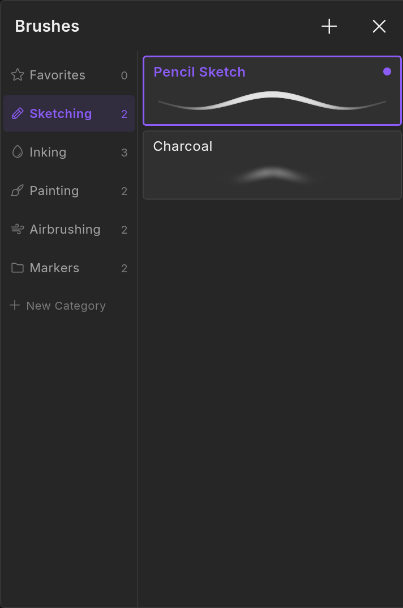
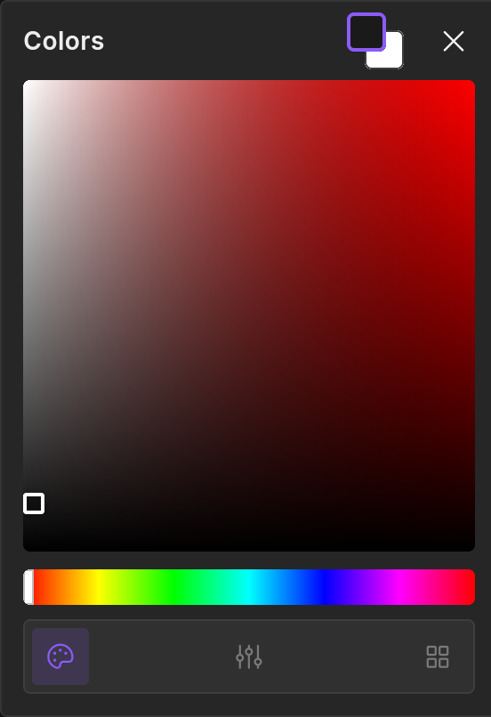
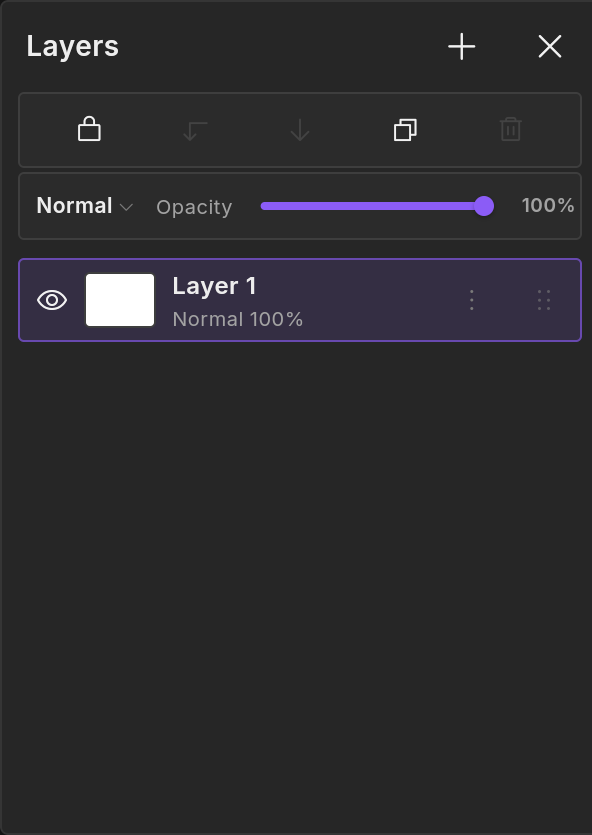
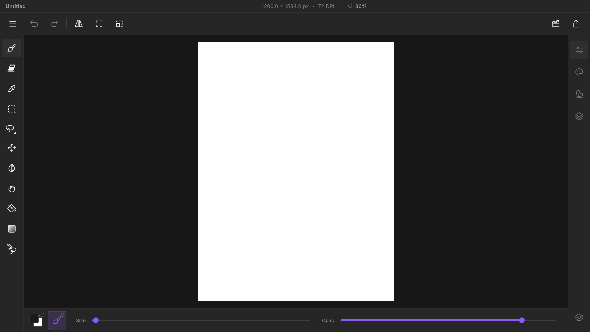
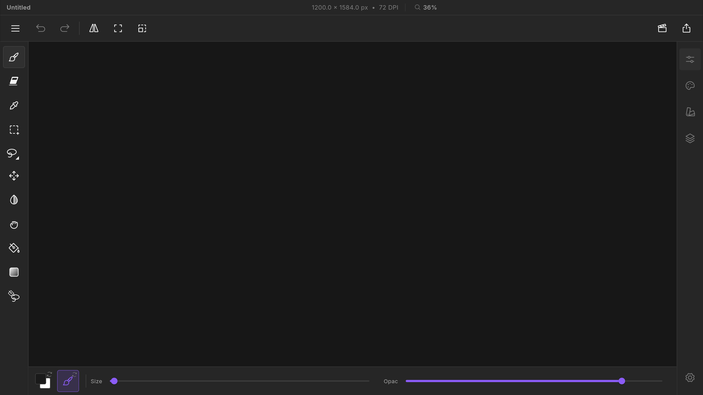
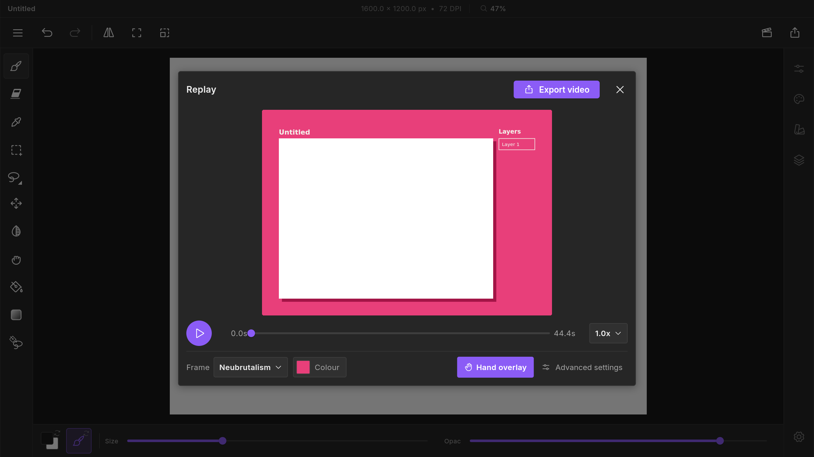

01
/03 Studio
Brushes
5
sets · pressure dynamics

02
/03 Studio
Colours
HSV
· sliders · swatches

03
/03 Studio
Layers
blend modes ·
opacity
· lock


Untitled
·
1200 × 1584
Every stroke ·
saved
No complicated setup.
No camera pressure.
You just draw.
Look
01
/05
Neubrutalism
Frame
skin
Neubrutalism
colour
#E83E77

Export once.
Post anywhere.
Instagram
zexdraws
Original audio
12,408 likes
zexdraws
Every stroke, replayable. Recorded and exported in ZexDraws
View all 214 comments
TikTok
Following
For You
+
48.2K
1,204
9,830
3,112
@zexdraws
Every stroke, replayable. Fantasy frame
#timelapse #digitalart
♫ original sound - zexdraws
YouTube
0:14 / 0:30
Drawing an explosion, every stroke replayed | ZexDraws timelapse
ZexDraws
128K subscribers
Subscribe
8.4K
|
128K views 2 days ago
Recorded automatically, exported with the Neubrutalism frame in pink.
ZexDraws
Every stroke, replayable.
Recorder built in